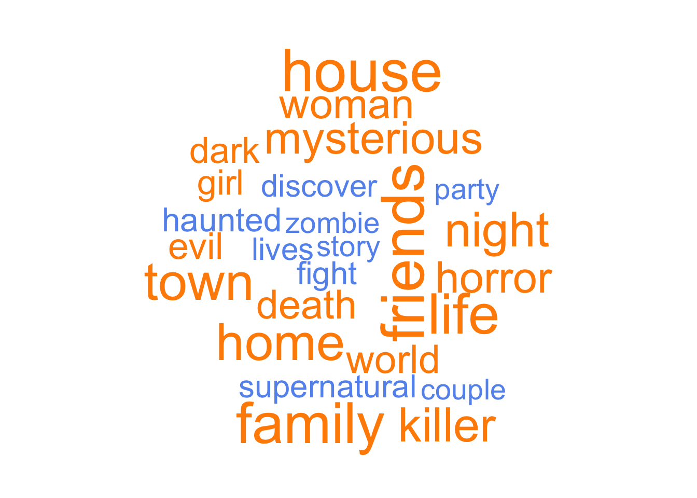
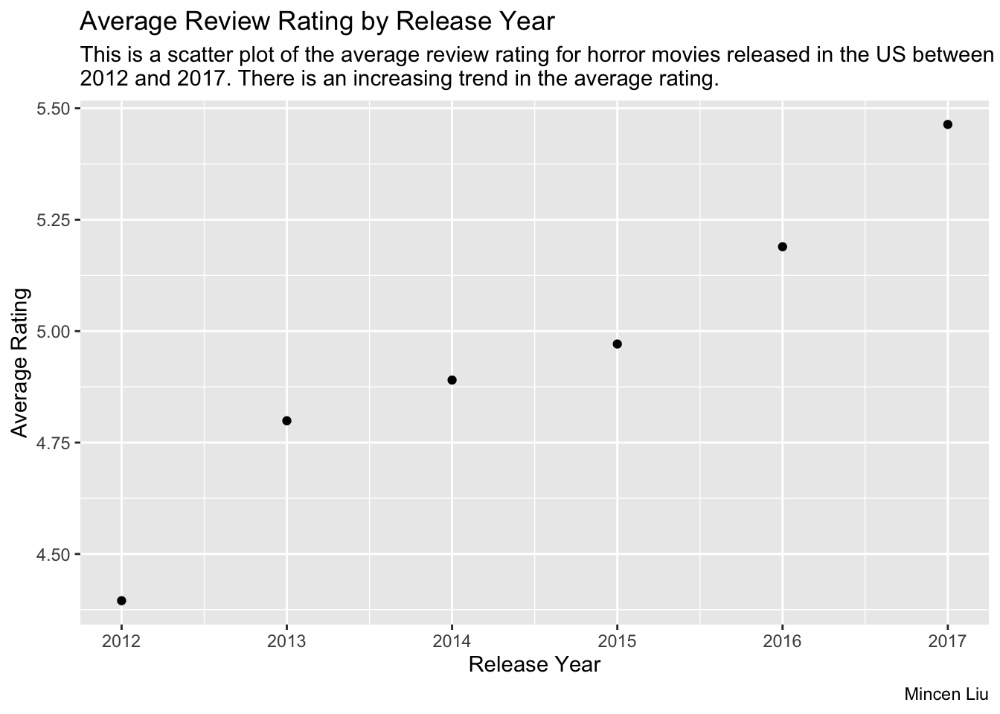
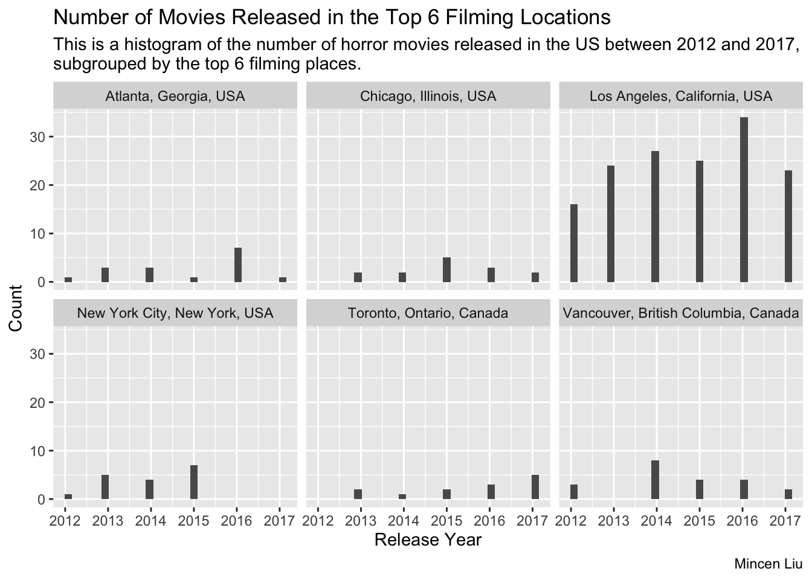
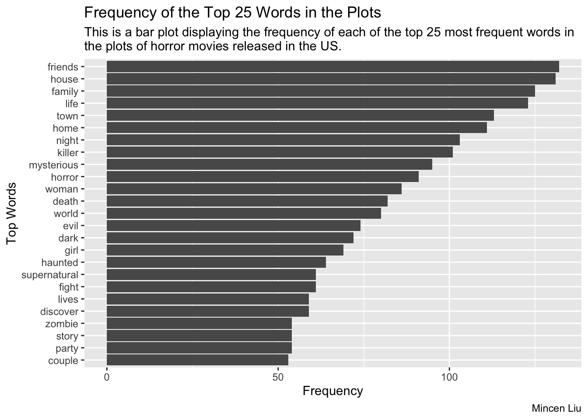
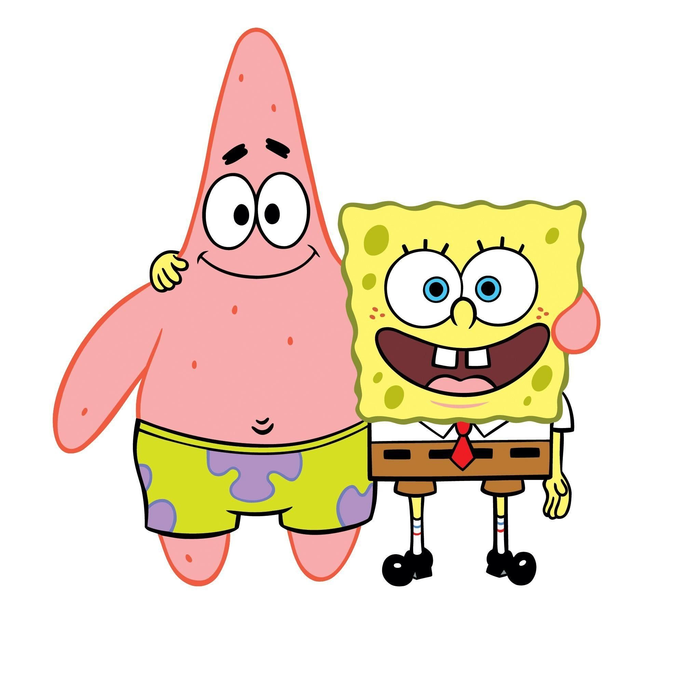

Example analysis
Question
- Prior to this year’s Halloween, one of my friends visiting me in Baltimore said that many horror movies have been shot in Baltimore. This intrigued me to explore the common filming locations, popular words in the plots, and the ratings of horror movies released in the US.
- In this example data analysis, I focus on three questions:
- How many times does Baltimore appear as the filming city? Is it really a popular place?
- What are the top 25 most frequent words in the plots?
- What are the average review ratings by year?
Intended Audience
- The intended audience for this data analysis is the general public who has the same curiosity of exploring US horror movie data as me.
Original Data
- The dataset comes from IMDB (PromptCloud 2017) by way of Kaggle. I found the dataset on TidyTuesday (Harmon, n.d.) under Episode 10: Horror Movies. The dataset contains movies worldwide from 2012 onwards.
library(here)here() starts at /Users/mincen/Desktop/JHU/Courses/Fall22Term2/140.840_Statistical_Programming/Projects/biostat840-intro-mincen-liu# tests if a directory named "data" exists locally
if(!dir.exists(here("data"))) { dir.create(here("data")) }
if(!file.exists(here("data","h_movies.RDS"))){
h_movies <- readr::read_csv("https://raw.githubusercontent.com/rfordatascience/tidytuesday/master/data/2019/2019-10-22/horror_movies.csv")
# save the files to RDS objects
saveRDS(h_movies, file = here("data","h_movies.RDS"))
}Rows: 3328 Columns: 12── Column specification ────────────────────────────────────────────────────────
Delimiter: ","
chr (11): title, genres, release_date, release_country, movie_rating, movie_...
dbl (1): review_rating
ℹ Use `spec()` to retrieve the full column specification for this data.
ℹ Specify the column types or set `show_col_types = FALSE` to quiet this message.h_movies <- readRDS(here("data","h_movies.RDS"))
library(tidyverse)── Attaching packages ─────────────────────────────────────── tidyverse 1.3.2 ──
✔ ggplot2 3.3.6 ✔ purrr 0.3.4
✔ tibble 3.1.8 ✔ dplyr 1.0.9
✔ tidyr 1.2.0 ✔ stringr 1.4.1
✔ readr 2.1.2 ✔ forcats 0.5.2
── Conflicts ────────────────────────────────────────── tidyverse_conflicts() ──
✖ dplyr::filter() masks stats::filter()
✖ dplyr::lag() masks stats::lag()glimpse(h_movies)Rows: 3,328
Columns: 12
$ title <chr> "Gut (2012)", "The Haunting of Mia Moss (2017)", "Sl…
$ genres <chr> "Drama| Horror| Thriller", "Horror", "Horror", "Come…
$ release_date <chr> "26-Oct-12", "13-Jan-17", "21-Oct-17", "23-Apr-13", …
$ release_country <chr> "USA", "USA", "Canada", "USA", "USA", "UK", "USA", "…
$ movie_rating <chr> NA, NA, NA, "NOT RATED", NA, NA, "NOT RATED", NA, "P…
$ review_rating <dbl> 3.9, NA, NA, 3.7, 5.8, NA, 5.1, 6.5, 4.6, 5.4, 5.3, …
$ movie_run_time <chr> "91 min", NA, NA, "82 min", "80 min", "93 min", "90 …
$ plot <chr> "Directed by Elias. With Jason Vail, Nicholas Wilder…
$ cast <chr> "Jason Vail|Nicholas Wilder|Sarah Schoofs|Kirstianna…
$ language <chr> "English", "English", "English", "English", "Italian…
$ filming_locations <chr> "New York, USA", NA, "Sudbury, Ontario, Canada", "Ba…
$ budget <chr> NA, "$30,000", NA, NA, NA, "$3,400,000", NA, NA, NA,…Data Dictionary
- Data dictionary is available here: https://github.com/rfordatascience/tidytuesday/tree/master/data/2019/2019-10-22#data-dictionary.
Data Wrangling
library(dplyr)
library(lubridate)
Attaching package: 'lubridate'The following objects are masked from 'package:base':
date, intersect, setdiff, unionlibrary(tidyr)
# Check the uniqueness of movie titles
h_movies_uni <- h_movies %>% distinct(title, .keep_all = TRUE)
# Use lubridate to create a column called release_year that is a Date class
h_movies_uni1 = h_movies_uni %>% filter(str_length(release_date) == 4) %>% mutate(release_date = paste0("1-Jan-", release_date))
h_movies_uni2 = h_movies_uni %>% filter(str_length(release_date) != 4)
h_movies_uni <- rbind(h_movies_uni1, h_movies_uni2)
h_movies_uni <- h_movies_uni %>% mutate(release_year = year(dmy(release_date)))
# Remove columns that we do not want to use
h_movies_uni <- h_movies_uni %>% select(title, release_country, release_year, review_rating, filming_locations, plot)
# Keep US only and drop rows with missing values
h_movies_us <- h_movies_uni %>% filter(release_country == "USA") %>% drop_na()
h_movies_us# A tibble: 1,326 × 6
title release_co…¹ relea…² revie…³ filmi…⁴ plot
<chr> <chr> <dbl> <dbl> <chr> <chr>
1 Dark Medicine (2013) USA 2013 2.8 Atlant… Dire…
2 Return of the Killer Shrews (2012) USA 2012 2.7 Sanna … Dire…
3 The Perfect House (2013) USA 2013 4.3 Buffal… Dire…
4 Slaughter Daughter (2012) USA 2012 4.4 Jersey… Dire…
5 Elder Island (2016) USA 2016 3.2 Beaver… Dire…
6 After the Dawn (2012) USA 2012 3.6 Ham La… Dire…
7 Fear Town, USA (2014) USA 2014 5.5 New Yo… Dire…
8 Dead Girls (2014) USA 2014 3.5 Chicag… Dire…
9 Other Halves (2015) USA 2016 3.5 San Fr… Dire…
10 Gas Light (2016) USA 2016 8.6 Shawne… Dire…
# … with 1,316 more rows, and abbreviated variable names ¹release_country,
# ²release_year, ³review_rating, ⁴filming_locations# Extract rows containing Baltimore as the filming location
h_movies_us %>% filter(grepl("Baltimore", filming_locations, ignore.case = TRUE)) %>% print(n = Inf) # A tibble: 9 × 6
title release_co…¹ relea…² revie…³ filmi…⁴ plot
<chr> <chr> <dbl> <dbl> <chr> <chr>
1 Treasure Chest of Horrors II (2013) USA 2013 3.7 Baltim… Dire…
2 Sociopathia (2015) USA 2015 4.3 Baltim… Dire…
3 The Break-In (2016) USA 2016 4.3 Baltim… Dire…
4 Fireangels: A Drifter's Fury (2017) USA 2017 2.8 Baltim… Dire…
5 Camp Killer (2016) USA 2016 6.2 Baltim… Dire…
6 The Suffering (2016) USA 2016 4.4 Baltim… Dire…
7 House of Good and Evil (2013) USA 2013 6.9 Baltim… Dire…
8 WNUF Halloween Special (2013) USA 2013 6.7 Baltim… Dire…
9 The Night Watchmen (2017) USA 2017 5.4 Baltim… Dire…
# … with abbreviated variable names ¹release_country, ²release_year,
# ³review_rating, ⁴filming_locationsNote that among the 1,326 movies with completed data released in the US, 9 were filmed in Baltimore, MD. Therefore, we do not see that Baltimore is a popular place for horror movie filming.
# Rank the filming locations for movies released in the US and get the top 10
h_movies_us %>% count(filming_locations, sort = TRUE) %>% slice_head(n = 10)# A tibble: 10 × 2
filming_locations n
<chr> <int>
1 Los Angeles, California, USA 149
2 Vancouver, British Columbia, Canada 21
3 New York City, New York, USA 17
4 Atlanta, Georgia, USA 16
5 Chicago, Illinois, USA 14
6 Toronto, Ontario, Canada 13
7 Santa Clarita, California, USA 12
8 Baltimore, Maryland, USA 9
9 Baton Rouge, Louisiana, USA 9
10 Dallas, Texas, USA 9library(tidytext)
# Get the frequency of the words and sort in a decreasing manner
pop_words <- h_movies_us %>% unnest_tokens(output = word, input = plot, token = "words") %>% anti_join(stop_words) %>% count(word, sort = TRUE)Joining, by = "word"pop_words# A tibble: 12,221 × 2
word n
<chr> <int>
1 directed 1325
2 michael 159
3 friends 132
4 house 131
5 david 126
6 family 125
7 life 123
8 james 115
9 town 113
10 home 111
# … with 12,211 more rows# Remove the word "directed" since nearly every plot starts with it and remove a few names,
# then only keep the top 25 most frequent words
pop_words_25 <- pop_words %>% filter(!(word %in% c("directed", "michael", "david", "james", "john", "film", "robert", "paul", "ryan", "mark", "adam", "scott", "jason"))) %>% slice_head(n = 25)
pop_words_25# A tibble: 25 × 2
word n
<chr> <int>
1 friends 132
2 house 131
3 family 125
4 life 123
5 town 113
6 home 111
7 night 103
8 killer 101
9 mysterious 95
10 horror 91
# … with 15 more rowslibrary(wordcloud)Loading required package: RColorBrewerset.seed(1109)
pop_words_25 %>% with(wordcloud(word, n, max.words = 25, colors = c("cornflowerblue", "darkorange"), scale=c(3.6, 0.5)))
Plots
Plot 1. A scatter plot of average review ratings by year:
library(ggplot2)
h_movies_us %>% group_by(release_year) %>% summarise(avg_rating = mean(review_rating)) %>% ggplot(aes(x = release_year, y = avg_rating)) + geom_point() + labs(title = "Average Review Rating by Release Year", subtitle = "This is a scatter plot of the average review rating for horror movies released in the US between\n2012 and 2017. There is an increasing trend in the average rating.", caption = "Mincen Liu") +
xlab("Release Year") + ylab("Average Rating")
Plot 2. A histogram of movie count by year in each of the top 6 filming locations:
pl <- h_movies_us %>% count(filming_locations, sort = TRUE) %>% slice_head(n = 6)
dt <- h_movies_us %>% filter(filming_locations %in% pl$filming_locations)
dt %>% ggplot(aes(x = release_year)) + geom_histogram() + facet_wrap(filming_locations ~.) +
labs(title = "Number of Movies Released in the Top 6 Filming Locations", subtitle = "This is a histogram of the number of horror movies released in the US between 2012 and 2017,\nsubgrouped by the top 6 filming places.", caption = "Mincen Liu") +
xlab("Release Year") + ylab("Count")`stat_bin()` using `bins = 30`. Pick better value with `binwidth`.
Plot 3. A bar plot with the top 25 words in the plots on the y-axis and the frequency of each word on the x-axis:
pop_words_25 %>% mutate(word = fct_reorder(word, n)) %>% ggplot(aes(word, n)) + geom_col() + coord_flip() +
labs(title = "Frequency of the Top 25 Words in the Plots", subtitle = "This is a bar plot displaying the frequency of each of the top 25 most frequent words in\nthe plots of horror movies released in the US.", caption = "Mincen Liu") +
xlab("Top Words") + ylab("Frequency")
Interestingly, the most frequent word is friends which appears 132 times.

Summary
Based on the analysis of this dataset, we are not able to conclude that Baltimore is a popular place for horror movie filming since there are only 9/1,326 films shot in this city. In the short plot descriptions, the top words include “friends”, “family”, “life”, “night”, “killer”, “mysterious”, etc. Additionally, the average movie ratings across years are displayed in Plot 1 and there is an increasing trend in the average ratings. The data analysis answers the questions proposed in the first section well.
List of Functions Used
dplyr:glimpse(),distinct(),filter(),mutate(),select(),count(),slice_head(),anti_join(),group_by(),summarise()tidyr:drop_na()ggplot2:geom_point(),geom_histogram(),geom_col()